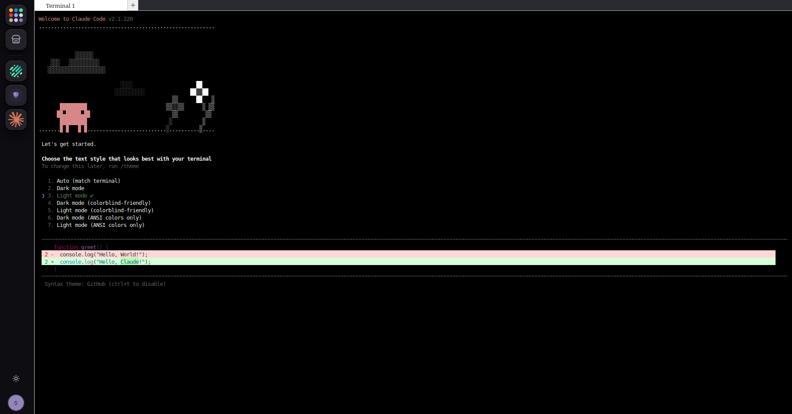
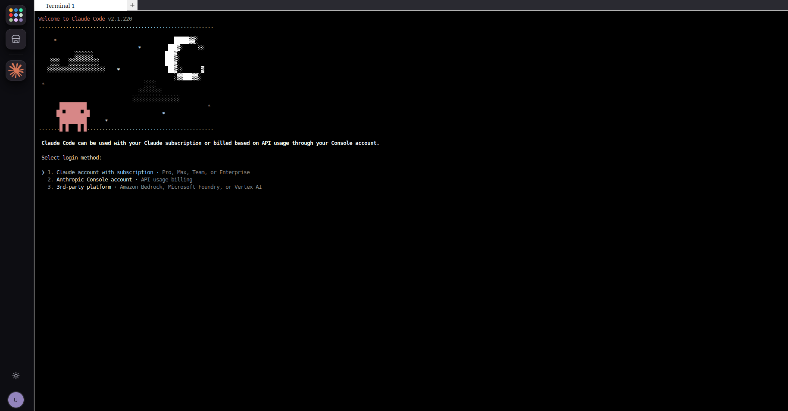
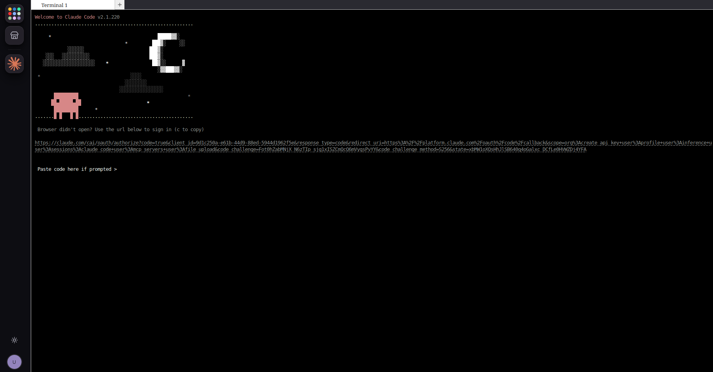
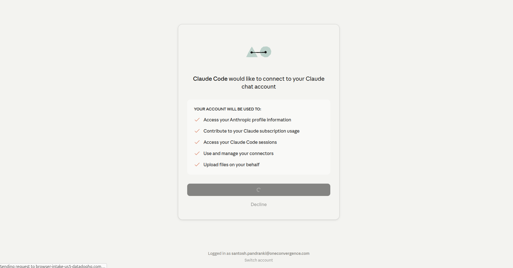
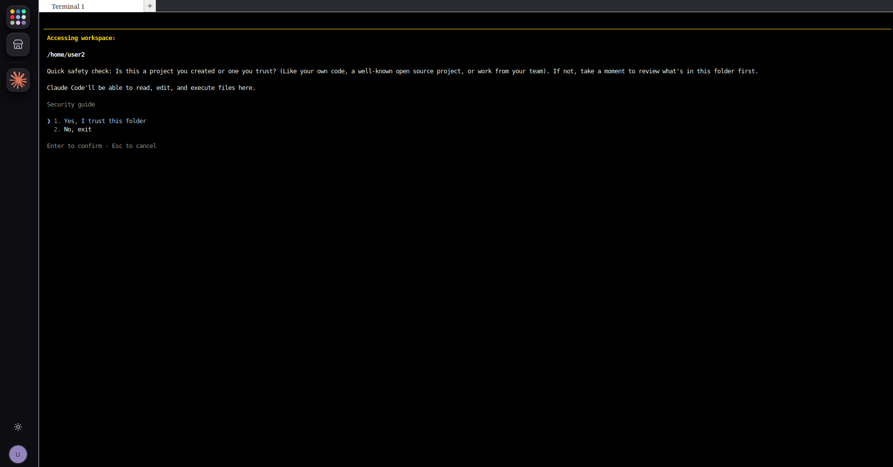

Using Claude Code in DKubeX Workspace with a Claude Subscription#
DKubeX Workspace ships with several coding agents built in — including Claude Code, Codex, Copilot CLI, OpenCode, Antigravity, and Mistral Vibe. This tutorial shows how to run Claude Code in DKubeX Workspace against your own Claude subscription (Pro, Max, Team, or Enterprise), so the agent is billed through your Anthropic account rather than through a platform-served model.
Use this flow when you already have a Claude subscription and want to use it inside DKubeX Workspace. To run Claude Code against a DKubeX-deployed model or an OpenRouter model instead, see Using Claude Code in DKubeX Workspace with DKubeX or OpenRouter models.
Prerequisites#
DKubeX Workspace, installed from the app catalog.
A Claude subscription (Pro, Max, Team, or Enterprise), or an Anthropic Console account for API-usage billing.
A browser you can use to complete the Claude sign-in.
Step 1 — Open Claude Code in your workspace#
Log in to DKubeX and open Workspace.
Create or start a workspace, then open the Claude Code app from the workspace.
On first launch, choose a terminal text style when prompted.
{kind=link}

Claude Code first-run screen — choose the text style that suits your terminal.#
Step 2 — Select the subscription login method#
When Claude Code starts, it asks how you want to authenticate. Choose the option that matches your account:
Claude account with subscription — Pro, Max, Team, or Enterprise.
Anthropic Console account — API-usage billing.
3rd-party platform — Amazon Bedrock, Microsoft Foundry, or Vertex AI.
For a subscription, select Claude account with subscription.
{kind=link}

Select the login method that matches your Claude account.#
Step 3 — Authenticate in the browser#
Claude Code opens a Claude sign-in page in your browser. If the browser does not open automatically, copy the sign-in URL shown in the terminal and open it yourself.
{kind=link}

If the browser does not open, use the sign-in URL from the terminal.#
On the Claude authorization screen, review the access being requested and approve the connection.
{kind=link}

Approve Claude Code’s request to connect to your Claude account.#
Step 4 — Paste the code back into the terminal#
After you approve, Claude gives you an authorization code. Copy it from the browser and paste it into the Paste code here if prompted field in the terminal.
{kind=link}
Paste the code from the browser back into the terminal.#
Step 5 — Trust the workspace folder and start#
Claude Code asks whether it can work in the current folder. Confirm Yes, I trust this folder to let the agent read, edit, and run files in your workspace.
{kind=link}

Confirm that Claude Code can work in your workspace folder.#
Claude Code is now active with your subscription, and you can start prompting it in the terminal.
Reverting#
To switch this workspace to a platform-served model later, set a default model in your workspace settings — see Using Claude Code in DKubeX Workspace with DKubeX or OpenRouter models. Setting the default model back to None restores your Claude subscription login.
Troubleshooting#
Browser did not open: copy the sign-in URL from the terminal and open it manually.
Code rejected: make sure you copied the entire code, with no trailing spaces, and that it has not expired — restart the login if needed.
Wrong account: on the authorization screen, use Switch account to sign in with the correct Claude account.
Next steps#
With Claude Code running, have it build and host an app straight from your workspace — see Building and hosting an app in DKubeX Workspace with a coding agent.